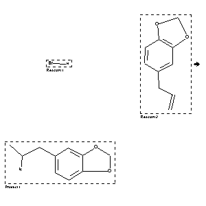

|  |
| FA | RX(1); FLST(1); RX(1) |
Reaction (1 of 1)
| Reaction ID | 5446367 |
| Reactant BRN | 3587158; 136380 |
| Reactant | hydrogen bromide; 5-allyl-benzo[1,3]dioxole |
| Product BRN | 150196 |
| Product | 2-benzo[1,3]dioxol-5-yl-1-methyl-ethylamine |
| No. of Reaction Details | 1 |
Reaction Details (1 of 1)
| Reaction Classification | Chemical behaviour |
| Temperature | 0 |
| Other Conditions | Erhitzen des Reaktionsprodukts mit waessr. Ammoniak auf 120 |
| Comment | Handbook |
| Citation Pointer | 500347; Patent; Merck; DE 274350; FTFVA6; Fortschr.Teerfarbenfabr.Verw.Industriezweige; DE; GE; 12; 768; |
Reference (1 of 1)
| Citation Number | 500347 |
| Document Type | Patent |
| Patent Author | Merck |
| Patent Number | DE 274350 |
| CODEN | FTFVA6 |
| Journal Title | Fortschr.Teerfarbenfabr.Verw.Industriezweige |
| Country Code | DE |
| Language Code | GE |
| (Series) Volume | 12 |
| Page | 768 |